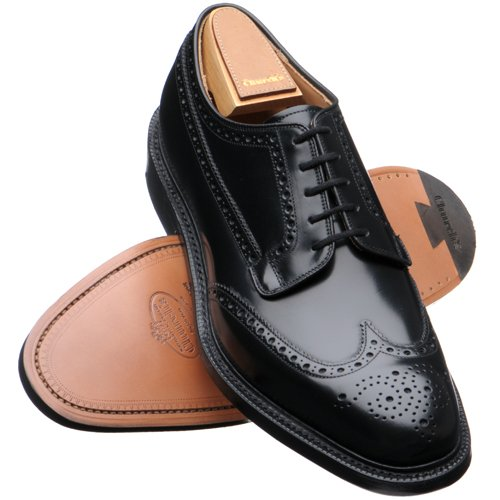
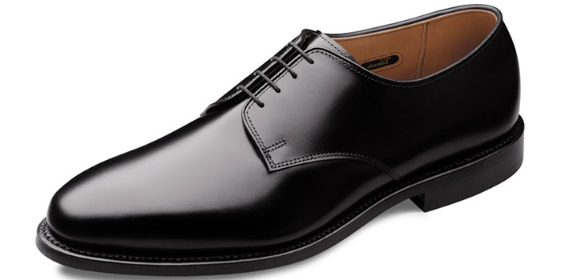
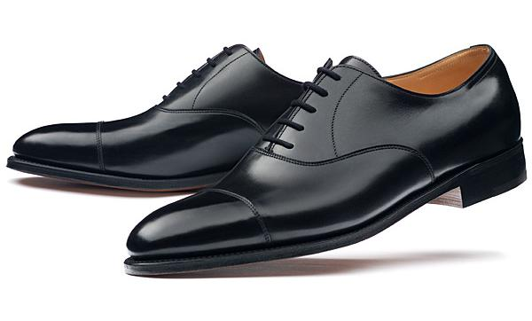
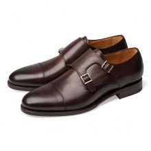
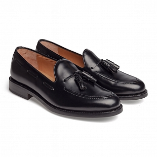
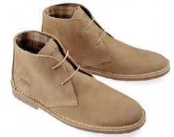
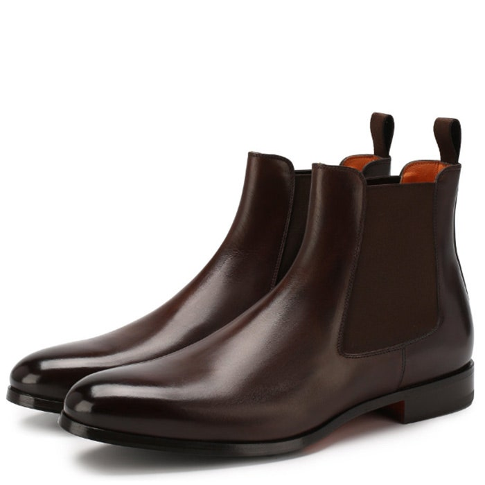

Ця сторінка створена для продажу класичного взуття та аксесуарів для чоловіків!
Щоб ознайомитись з асортиментом переходьте за посиланням
Туфлі
- Броги — туфлі з перфорованим верхом. Можуть бути як з відкритою шнурівкою, так і з закритою. 
- Дербі — туфлі з відкритою шнурівкою, в яких берци нашиті зверху над союзкою 
- Оксфорди — це різновид класичного шкіряного взуття із закритим шнуруванням, де союзка нашита зверху берців. 
- Монки — вид взуття, в якому відсутня шнурівка, але при цьому вона забезпечена однією або двома пряжками. 
- Лофери — чоловічі або жіночі туфлі без застібок або шнурівки з довгим язичком, круглим носком і перемичкою на підйомі стопи.
Черевики
- Дезерти — замшеві черевики на креповій підошві з двома парами отворів для шнурків. 
- Челсі — це черевики без шнурівки і застібок, мають еластичні вставки по бокам. Виготовляються з натуральної шкіри та замші. 
Звязок зі мною
Відвідайте мою сторінку Instagram
Залишайте свої побажання та відгуки за формою нижче